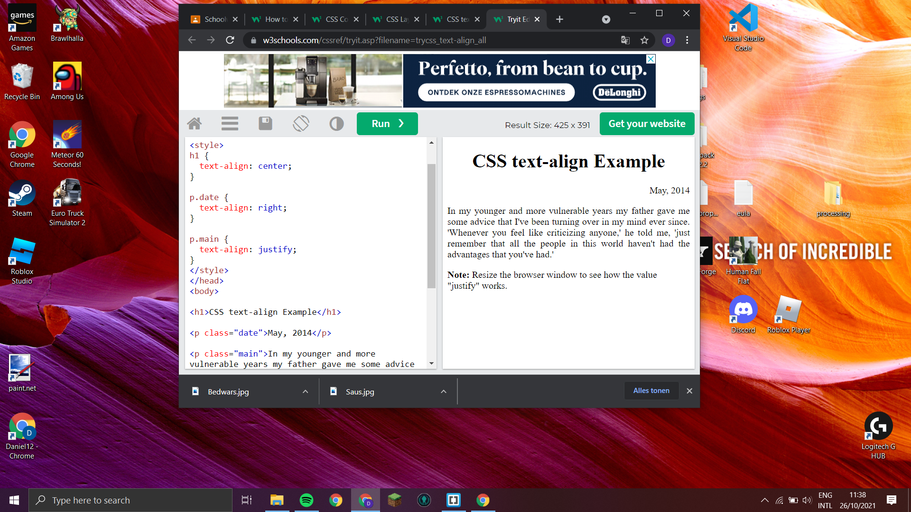

1. CSS staat voor Cascading Style Sheet.
2. Format van een website bepalen.
3. HTML is voor de text css is voor de format van een website.
4. 2 manieren.
5. je kan bij eentje een link plaatsen van een aparte file van css en je kan ook in style je css plaatsen.
6. de beste is het in dezelfde file plaatsen want dan is het overzichtelijker.
7. selectors zijn om de element van html te vinden die je gebruikt in css.
8. een declaratieblok laat zien wat de verandering is in de code.
9. de color en fontsize kunnen in een line.
10. text justify zorgt ervoor dat de text aanpast op de grote van de window.

11. een class maakt een groep van meerdere HTML elementen.
12. een ID kiest een specifieke element.
13. een Id identificeerd 1 specifieke element en een class groepeert meerdeere elementen.
14. een margin creeërt space zonder rekening te houden met een border en Padding maakt pace binnen een border.
15. in heritance past iets aan als er geen waarde is aangegeven.
16. een blok Een block-level element is een element, dat altijd op een nieuwe regel begint en ook altijd die hele regel in beslag neemt, of beter gezegd: de gehele breedte van het element waar het zich in bevindt. Een inline element daarentegen neemt niet meer ruimte in beslag, dan nodig is voor de inhoud die erin staat.
17. weet ik niet.